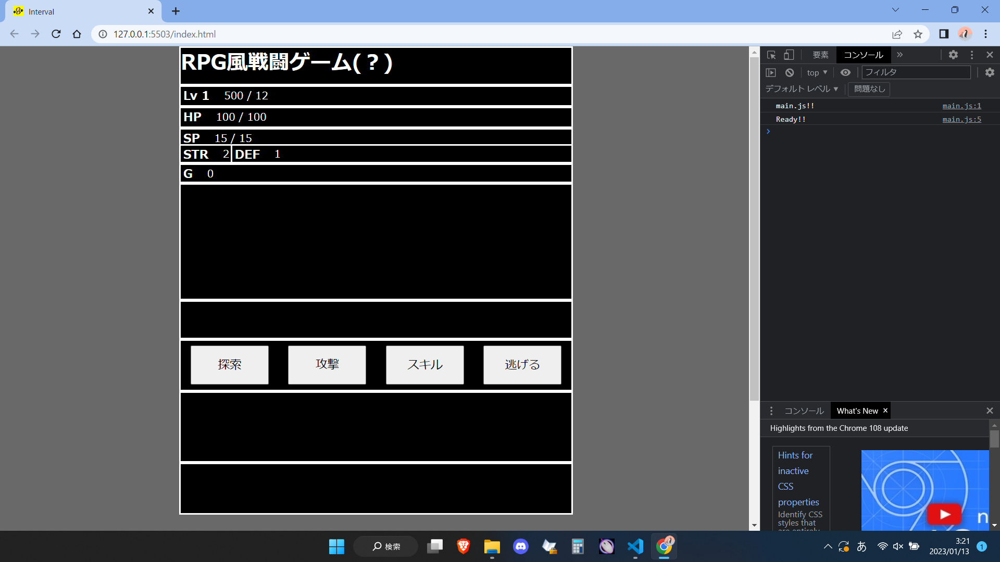
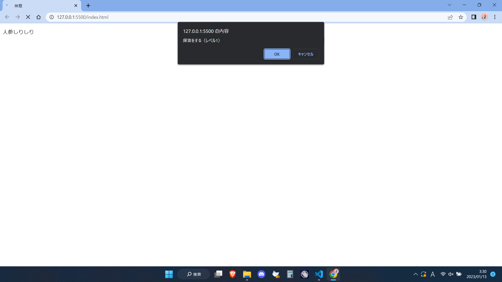
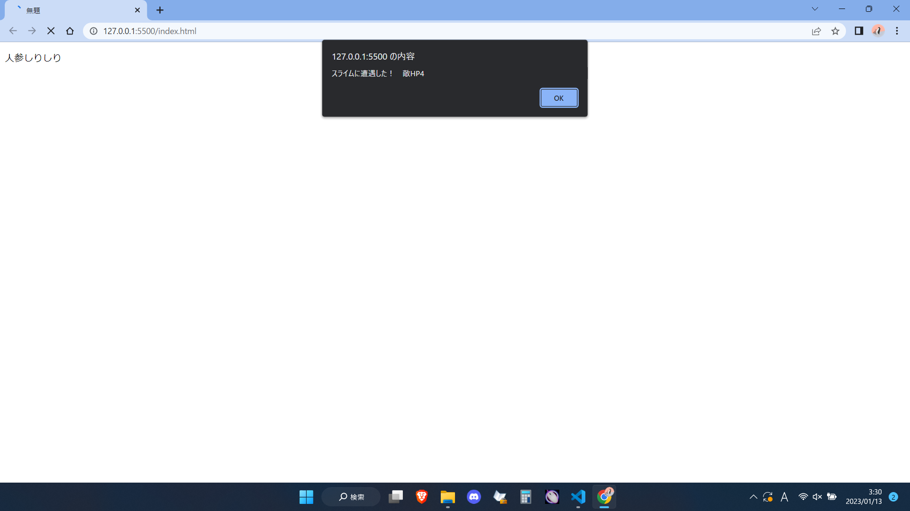
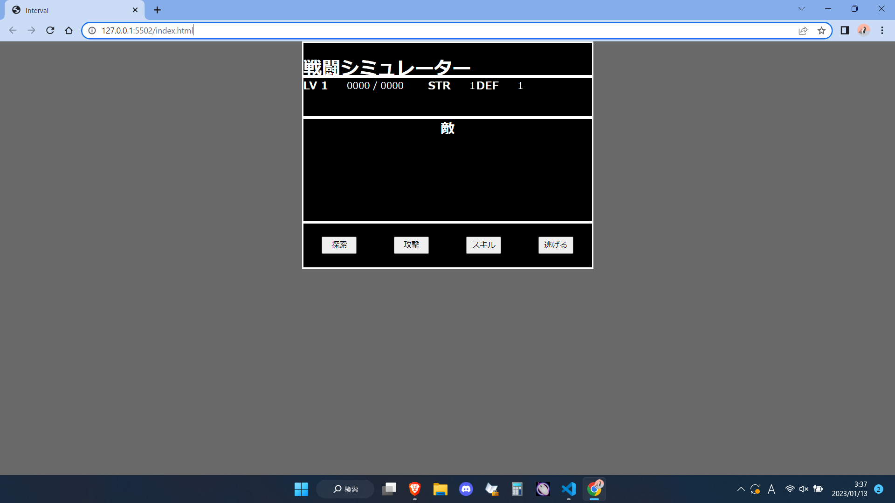
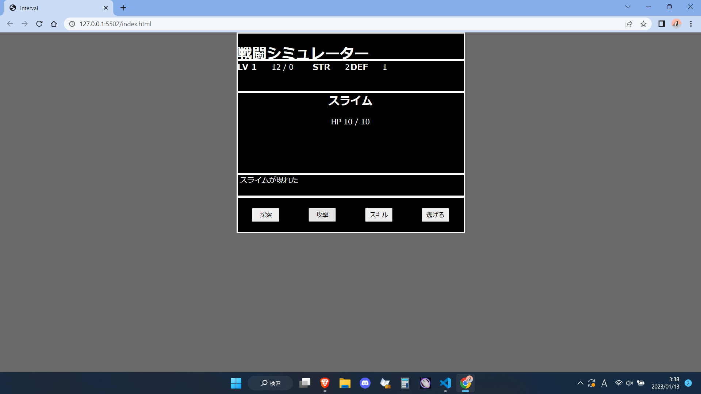

2023年 1月13日から、この作成記録を作ることにしました！
気分的になのですが、cssを私が作ったシミュレーターぽくいじってみました。この下のボタンを押すと変更ができます。
さあ、どうですか？それぽくなりましたか？
サクッと作るつもりでしたが、実はここまでで既に30分かかってます...
ということで、早速記録の方を付けていきます、まずは今現在の成果からですね！
ちょっと表示が大きいですが、クリックで拡大などの方法がイマイチなのでこのままいきます。
さぁこのよく見るようなゲーム画面、今は、探索で敵と遭遇、攻撃で戦い、逃げることもできる。
戦闘に勝利すれば、勝利テキストが表示され、経験値が入りレベルまで上がる。
と、ゲームと言うのにはちょっと無理のあるボリュームなのですが、これを作るまでに
なんと
も費やしました...果てしねぇ...
一つ一つ見ていけば「これだけ」と言えるものなのですが、初めて挑戦したり
組み合わせると複雑になったりで、バグりまくりまして...(´･ω･`)
では、今現在の状態を紹介したところで、これまでの経緯をほーんとざっくり、紹介していきます。
 まずは、2022年の6月、専門学校に入学してすぐですね、習ったif文、alert、そして自分で調べたwhile文
この三つを使用し、戦闘をして経験値がもらえる！レベルが上がるかを確認する！
という処理を繰り返すだけの戦闘シミュレーターができました。
buttonの機能が無しとなると、ほんと出来ることが少なく、どうしてこれを作ろうと思ったのか不思議なくらいですね。
さぁ、時期が一気に進み、大体12月程ですね、button、画像、音声、アニメーション
できることがかなり増えた頃です、ここまでできるなら...と戦闘シミュレーター作成にとりかかりました。
 最初はゲームの初期画面ですね、これはまだ何の機能もありません、敵もテキストです。
次に実際に戦闘ができるようにしていくのですが、経験値や、ダメージ計算を作っていません...
かなり時間のかかる工程です、html,cssが得意ではないので、この画面を作るのにも5~6時間掛けています。
萎えかけましたね...次の日ちゃんとやりましたが...
何とか作れたゲーム内計算、いまでもこれと同じものを使っているはずです。
そしてこれから...
実際に戦闘ができようにしたり、敵を画像化したり、画面の表示を少しずつ変えたりして...
最初に見せた今現在の姿になりましたと！
ブログ初日はここまでにして、次回から、作った成果を書いていきます。
ここまで1時間程度で終わらせるつもりが、2時間半はかかってしまった...もうそろ朝の6時なので今日は寝ます...